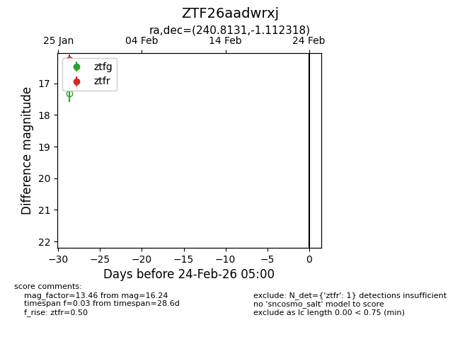
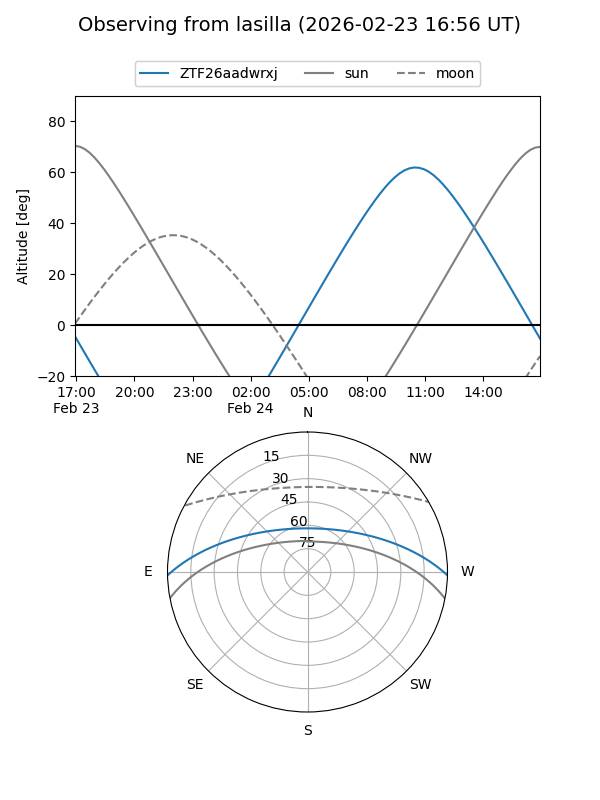
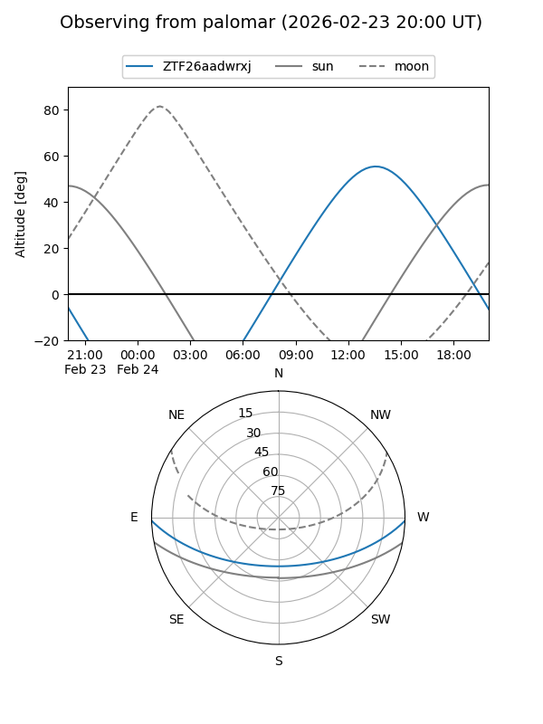

ZTF26aadwrxj
Target ZTF26aadwrxj at 2026-01-28 13:56
Aliases and brokers:
FINK: link
Lasair: link
ALeRCE: link
alt names
ZTF26aadwrxj (ztf,fink_ztf)
Coordinates:
equatorial (ra, dec) = 240.8131,-1.11232
equatorial (HMS+DMS) = 16:03:15.15,-01:06:44.34
galactic (l, b) = (9.4466,+35.95073)
Flags:
Photometry:
last ztfr=16.24
1 ztfr detections
Lightcurve

Visibility


Additional plots